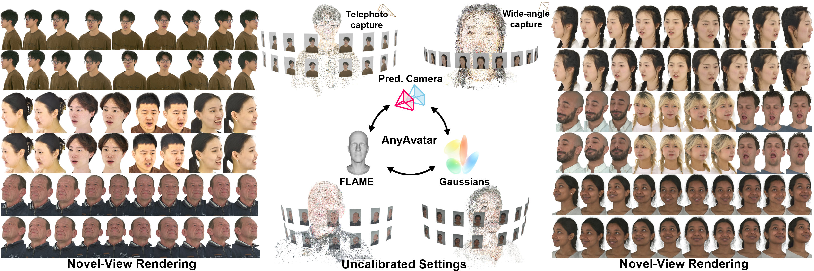
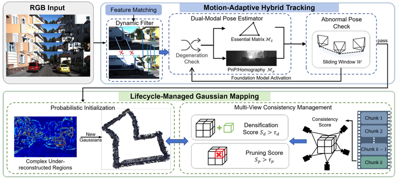
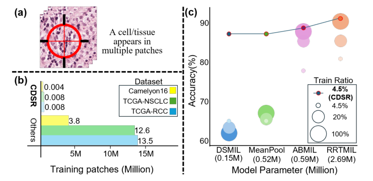
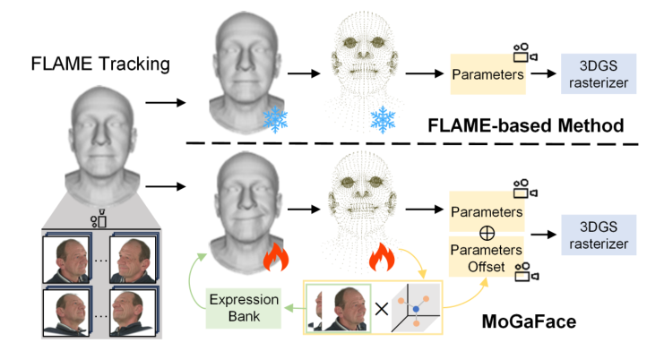
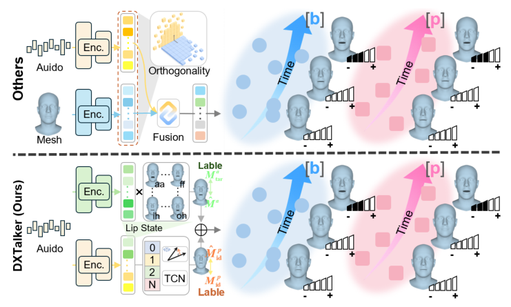

I am Dongxu Shen (沈东旭), an undergraduate student in Artificial Intelligence at Hong Kong University of Science and Technology (Guangzhou). I was also an exchange student at the University of California, Berkeley (Fall 2025).
My research interests lie in 3D vision and neural rendering, with a long-term goal of building scalable and photorealistic 3D representations for real-world scene reconstruction. I am particularly interested in:
- High-fidelity 3D Gaussian head avatars and speech-driven facial animation
- Large-scale 3D Gaussian Splatting SLAM for outdoor scenes
- Whole slide image (WSI) analysis and efficient high-resolution patch representation
Feel free to reach me at sdx13431026699@gmail.com.
🎓 Education
- 2023.09 – Present, HKUST (Guangzhou) — B.S. in Artificial Intelligence (GPA: 3.3 / 4.3)
Relevant coursework: Data Structures and Algorithms (A), Machine Learning (A-), Introduction to AI (A), Mathematics for AI (A) - 2025.09 – 2025.12, UC Berkeley — Exchange Student (GPA: 3.9 / 4.0)
Relevant coursework: Computer Vision (A), Natural Language Processing (A)
🔬 Research Projects

Reconstructs animatable 3D Gaussian head avatars from uncalibrated multi-view images by jointly refining camera poses, FLAME geometry, and Gaussian appearance.

A monocular 3DGS-SLAM framework for kilometer-scale outdoor scenes, addressing pose tracking failure and memory overhead in long-sequence reconstruction.

Shows that a small set of informative high-resolution patches, selected and reconstructed through cascaded dual-scale learning, is sufficient for robust WSI representation.


Factorizes speech-driven 3D facial animation into shared articulatory prototypes and identity-specific dynamics for accurate lip sync and expressive motion.